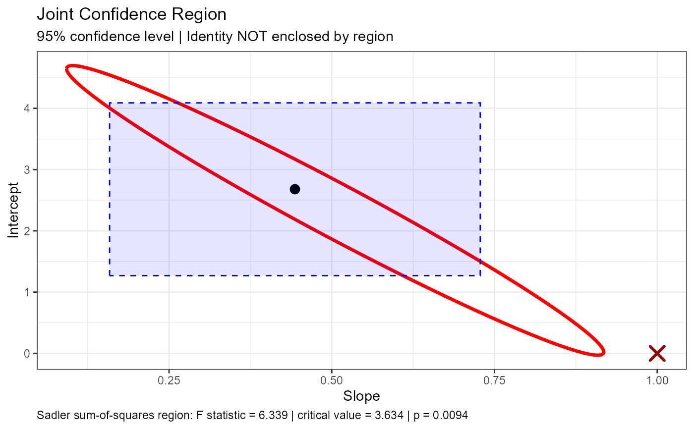

![[Experimental]](figures/lifecycle-experimental.svg)
joint_test() tests whether the estimated intercept and slope jointly fall
within a confidence region around specified ideal values (typically
intercept = 0 and slope = 1 for method comparison studies). plot_joint()
draws that region, with the ideal point marked as enclosed or not.
Usage
joint_test(object, ...)
# S3 method for class 'simple_eiv'
joint_test(
object,
ideal_intercept = 0,
ideal_slope = 1,
conf.level = NULL,
test_method = c("F", "asymptotic"),
method = NULL,
...
)
plot_joint(x, ...)
# S3 method for class 'simple_eiv'
plot_joint(
x,
ideal_intercept = 0,
ideal_slope = 1,
conf.level = NULL,
test_method = c("F", "asymptotic"),
show_intervals = TRUE,
n_points = 100,
method = NULL,
...
)Arguments
- object, x
- ...
Additional arguments (currently unused).
- ideal_intercept
The hypothesized intercept value (default: 0).
- ideal_slope
The hypothesized slope value (default: 1).
- conf.level
Confidence level for the region and test. The default,
NULL, uses the level the model was fitted with (object$conf.level).- test_method
Reference distribution for the Wald test and ellipse (
method = "wald"only)."F"(default) uses F(2, n-2);"asymptotic"uses chi-squared(2), the large-sample approximation. The Sadler test always uses F(2, n-2).- method
Which joint region and test.
NULL(default) uses"sadler"for Deming fits and"wald"for Passing-Bablok fits."sadler"is the sum-of-squares region of Sadler (2010), available fordem_reg()fits only."wald"is the ellipse from the variance-covariance matrix (the only option forpb_reg()). See Details.- show_intervals
Logical (
plot_joint()only). If TRUE (default), also shows the model's marginal confidence intervals as a rectangle. They are shown only whenconf.levelmatches the level the model was fitted with.- n_points
Number of points used to draw the region (
plot_joint()only; default 100).
Value
plot_joint() returns a ggplot. joint_test() returns an object
of class htest containing:
- statistic
For
method = "sadler", the F statistic; formethod = "wald", the Mahalanobis distance.- parameter
Degrees of freedom. For the F-based tests,
df1anddf2; for the asymptotic test,df(always 2).- p.value
The p-value for the test.
- conf.int
The confidence level used.
- estimate
Named vector of estimated intercept and slope.
- null.value
Named vector of hypothesized intercept and slope.
- alternative
Description of the alternative hypothesis.
- method
Description of the test.
- data.name
Name of the input object.
Details
Sadler region (Deming, default)
For a Deming fit with error ratio \(\lambda\) and weights \(w_i\), let
$$S(a, b) = \sum_i \frac{w_i (y_i - a - b x_i)^2}{1 + \lambda b^2},$$
the weighted sum of squares that Deming regression minimises (Sadler, 2010,
Eq. 11; Draper & Smith). With \(\hat S\) its minimum, the test of
\((a_0, b_0)\) is
$$F = \frac{(S(a_0, b_0) - \hat S) / 2}{\hat S / (n - 2)}$$
on F(2, n - 2), and the confidence region is the set of \((a, b)\) where
\(F\) does not exceed the critical value. No variance-covariance matrix
is involved; only the error ratio (not the size of the errors) matters. The
region is not an ellipse: for each slope its intercept limits have a closed
form, and its slope limits are the roots of a quadratic, so plot_joint()
draws it exactly. If the data are too imprecise for the slope to be bounded,
the test is still reported but the region is not drawn.
In simulations with normal errors (n = 10 to 100, narrow and wide ranges, error ratios 1 and 4, constant and proportional errors, and replicate data with the error ratio estimated), the Sadler test rejected a true null hypothesis 4.3-5.9% of the time at a nominal 5%. It was at least as powerful as the Wald test at the same size.
The model frame must be stored (dem_reg(model = TRUE), the default).
dem_reg(weighted = TRUE) uses fixed weights computed from the data, while
Sadler reweighted iteratively; the region uses the fitted model's weights.
Wald ellipse
method = "wald" computes the Mahalanobis distance between the estimated
coefficients and the hypothesized values, using the variance-covariance
matrix of the estimates, against 2 F(2, n - 2) (or chi-squared(2) with
test_method = "asymptotic").
For Deming regression the matrix is the delete-one jackknife. This test is
liberal in small samples: in the same simulations it rejected a true
null 7.8-9.7% of the time at n = 10, about 7.4% at n = 20 and 6.1% at
n = 50 (up to 14% with test_method = "asymptotic"), because the jackknife
variance is itself unstable. Prefer the Sadler test for Deming fits.
For Passing-Bablok regression the model must have been fitted with
replicates > 0 and se_method = "bootstrap" or "jackknife". Both held
4.3-5.4% in simulations (n = 20 to 100). The Dufey (2020) matrix
(se_method = "dufey") is not used for joint tests: it rejected a true
null 8-11% of the time.
References
Sadler, W.A. (2010). Joint parameter confidence regions improve the power of parametric regression in method-comparison studies. Accreditation and Quality Assurance, 15, 547-554.
Draper, N.R., & Smith, H. (1966). Applied Regression Analysis. Wiley, New York.
Examples
data("reps")
fit <- dem_reg(y ~ x, data = reps)
joint_test(fit)
#>
#> Joint Confidence Region Test [Sadler sum-of-squares, F-based] (H0:
#> intercept = 0, slope = 1)
#>
#> data: y ~ x
#> F = 6.3387, df1 = 2, df2 = 16, p-value = 0.009389
#> alternative hypothesis: true intercept and slope are not equal to the null values
#> null values:
#> intercept slope
#> 0 1
#> sample estimates:
#> intercept slope
#> 2.6793028 0.4433897
#>
plot_joint(fit)

# The Wald ellipse from the jackknife variance-covariance matrix
joint_test(fit, method = "wald")
#>
#> Joint Confidence Region Test [Wald, F-based] (H0: intercept = 0, slope
#> = 1)
#>
#> data: y ~ x
#> X-squared = 17.172, df1 = 2, df2 = 16, p-value = 0.002929
#> alternative hypothesis: true intercept and slope are not equal to the null values
#> null values:
#> intercept slope
#> 0 1
#> sample estimates:
#> intercept slope
#> 2.6793028 0.4433897
#>